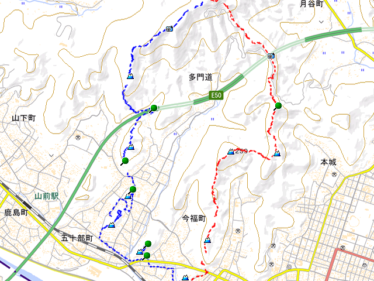

ハンドヘルドGPSやスマホのGPSアプリで記録したログ（移動軌跡）をWeb地図に上乗せし、ユーザサイトに設置して表示する方法を説明します。このページでは、GPSログを上乗せ表示した地図一般を「ルート地図」と呼んでいます。JavaScriptライブラリとしてOpenLayers／Leaflet／Google Maps API／Bing Maps API／Mapbox GL JS、GPSログのファイル形式としてKML／GeoJSON／GPXをそれぞれ用いた場合のルート地図のHTMLコードをGitHubで公開しています。
xmlns:kashmir3d="http://www.kashmir3d.com/namespace/kashmir3d"をもつ。「KMLウェブ地図プロファイル」と「スタイルつきGeoJSON規約」の詳細については、国土地理院HPの「作図・ファイル機能のデータ仕様」を参照してください。

(a) カシミール3Dで作成したルート地図（PNG画像）
(b) Leaflet + GeoJSON によるルート地図
図1 ルート地図の作例
その他の表示例は、次表の中の ボタンをクリックすると、別窓が開いて閲覧することができます。OpenLayers の場合は、Shift+Alt+マウス左ボタンで地図を回転させることができます。
なお、「地図データ」と「複数」の列は、GPSデータの上乗せ表示なしの地図のみの表示例です。また、OpenLayers (npm) の行は、olパッケージを用いたもの（JavaScriptのファイルサイズが約6割まで削減される）、Mapbox GL JS（+GSIBV）の行は国土地理院が実験的に提供しているベクトルタイルを利用した実験的なコードです。
※1： サードパーティのL.KML.jsが必要。
※2： ※1の改良版。L.KML.jsは不要。線種は点線に固定。
※3： KMLファイルはイントラネットに置けない。
※4： ※3の制約を解消した改良版。
※5： Bing Maps APIに不具合があり、ある条件（description要素はCDATA、Style要素が前でPlacemark要素が後）を満たさないKMLファイルは読み込めない。
※6： ※5の制約を解消した改良版。線種は点線に固定。
図1(b)を例として、ルート地図をユーザサイトに設置する手順の概略を次に示します。なお、Google Maps APIなど、APIキーが必要な場合は、HTMLファイル中の_YOUR_API_KEY_を各自で取得したAPIキーに書き換える必要があります。
. ├── your_page.html ├── lmap_geojson.html └── example └── routemap.geojson
. ├── your_page.html ├── lmap_kml.html ├── libs │ └── L.KML.js └── example └── routemap.kml
lat、緯度lon、単位は10進数の度）やズームレベル、上乗せするGPSデータのURLを指定する。
<iframe width="640" height="480" src="lmap_geojson.html?lat=36.354746&lon=139.435076&zoom=13&url=example/routemap.geojson"> </iframe>
<script>
function routemap(url) {
window.open(url, 'ROUTEMAP', 'width=640,height=480,resizable=yes');
return false;
}
</script>
<a href="lmap_geojson.html?lat=36.354746&lon=139.435076&zoom=13&url=example/routemap.geojson" onclick="return routemap(this.href)">ルート地図</a>
なお、ルート地図用HTMLファイルは、使用するJavaScriptライブラリとGPSデータのファイル形式の組み合わせ毎に異なるファイルとなり、ファイル名はXmap_Y.htmlとなります。ここで、XはJavaScriptライブラリの頭文字（l, o, g, b, m）、YはGPSデータのファイル形式（kml, geojson, gpx）です。これらのルート地図を設置する場合も、設置手順は基本的に同じです。
| 2020-08-12 | HTMLコードのサンプルを拡充。 |
| 2019-12-29 | OpenLayers 6.1.1、Leaflet 1.6.0にバージョンアップ。 Bingマップ版の不具合（The specified credentials are invalid.）を改訂。 |
| 2019-07-07 | サイトを全面的に改訂。GPX2GeoJSONを公開。 |